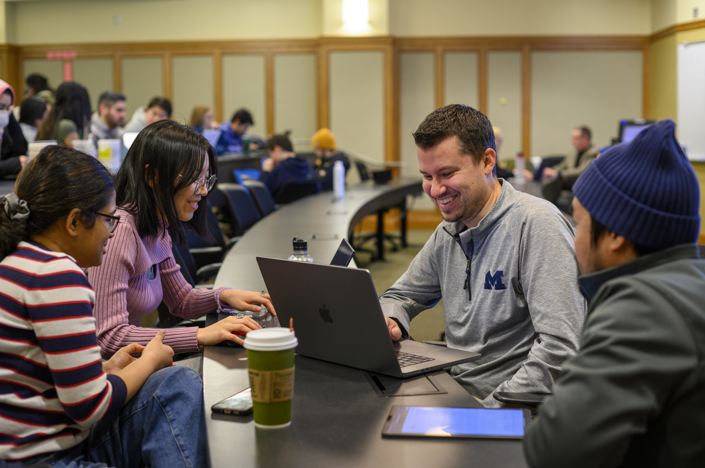

Initial Client Email Examples
Use these email templates as examples for your first contact with clients and partners.
View the Initial Client Email Examples
First impressions shape the trajectory of a partnership. The starting phase is where abstract project ideas turn into structured, professional commitments.
By establishing clear team contracts, co-creating agendas, and aligning on project scope early, you build psychological safety within your team and trust with your client. Learning how to navigate early ambiguity is one of the most valuable professional capabilities you will gain at UMSI.

Use these resources to begin professional communication and prepare for your first meeting with a client or community partner.
Use these email templates as examples for your first contact with clients and partners.
View the Initial Client Email ExamplesUse this sample agenda as a step-by-step structure for running a professional kickoff meeting.
View the Initial Client Meeting Sample Agenda
These resources provide guidance for establishing reciprocal relationships, managing expectations, and defining responsibilities among project stakeholders.
Review principles for building reciprocal, respectful community relationships.
View the Ginsberg Center Student-Client Partnership ToolkitReview guidelines for managing expectations and deliverables in a student-client partnership.
View the Student-Client Partnership GuideUse this agreement template to establish roles between student teams and the Engaged Learning Office.
View the Student Org-ELO Partnership Agreement TemplateReview key milestones, deadlines, and submission dates for the Student Organization Engaged Learning Leaders program.
View the SO-ELL ScheduleAfter establishing communication, conducting your initial meetings, and formalizing expectations with your project partners, continue building on your experience and prepare to close your work responsibly.
Continue to Ending the Experience